Gallery — Browsing your photos
← Back to contents
1.1. The Gallery

This is the Gallery. All your photos appear here as a grid of thumbnails. Scroll to browse, or use the toolbar to sort, search, and manage your collection.
1.2. The toolbar
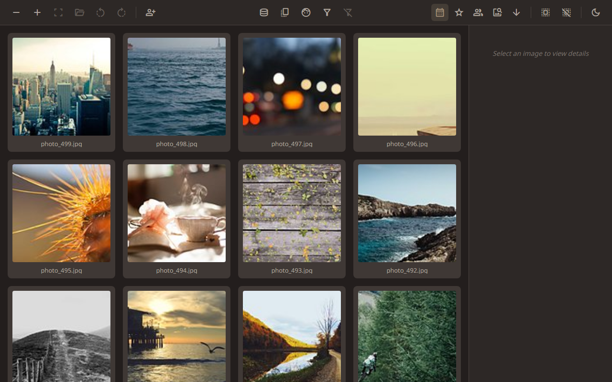
The toolbar runs along the top of the screen. Buttons show Unicode symbols by default, or Material Symbols when the font is available.
| Offline | Online | Description |
|---|
| − | remove | Smaller thumbnails |
| ✚ | add | Larger thumbnails |
| ⛶ | fullscreen | View selected photo full-screen |
| 📂 | folder_open | Reveal file on disk |
| ⟲ | rotate_left | Rotate left |
| ⟳ | rotate_right | Rotate right |
| 🏷️ | person_add | Toggle face tagging mode |
| 🏞️ | photo_library | Back to Gallery |
| 🖥️ | database | Manage folders |
| ⧉ | copy_all | Find duplicates |
| 👤 | face | Browse faces |
| 🔎 | filter_alt | Search / filter |
| 🚫 | filter_alt_off | Clear filter |
| 📅 | calendar_month | Sort by date |
| ★ | star | Sort by rating |
| 👥 | group | Sort by people |
| 🔍 | image_search | Sort by content similarity |
| ↓ | arrow_downward | Flip sort direction |
| ▣ | select_all | Select all |
| ▢ | deselect | Clear selection |
| 🌙 | dark_mode | Toggle light/dark theme |
1.3. Selecting a photo
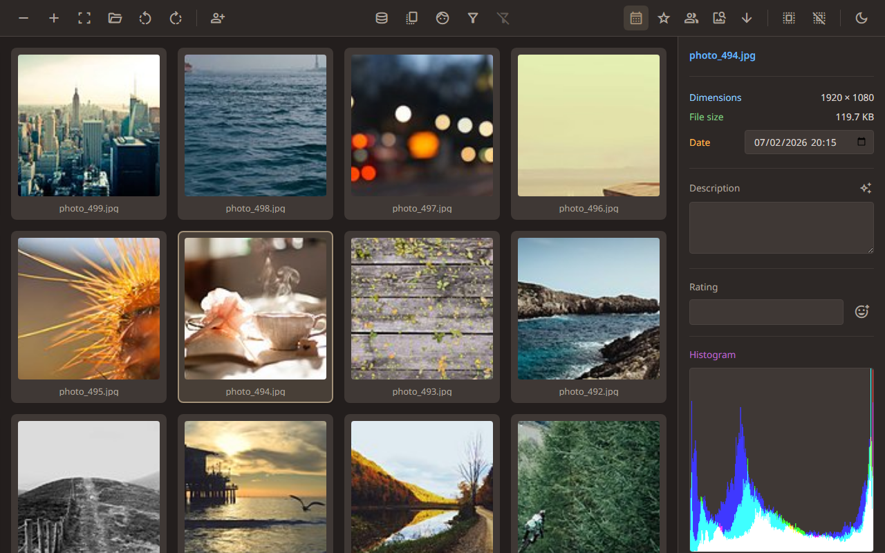
Click any thumbnail to select it. A border appears around the selected photo, and the info panel on the right shows its details.
1.4. The info panel
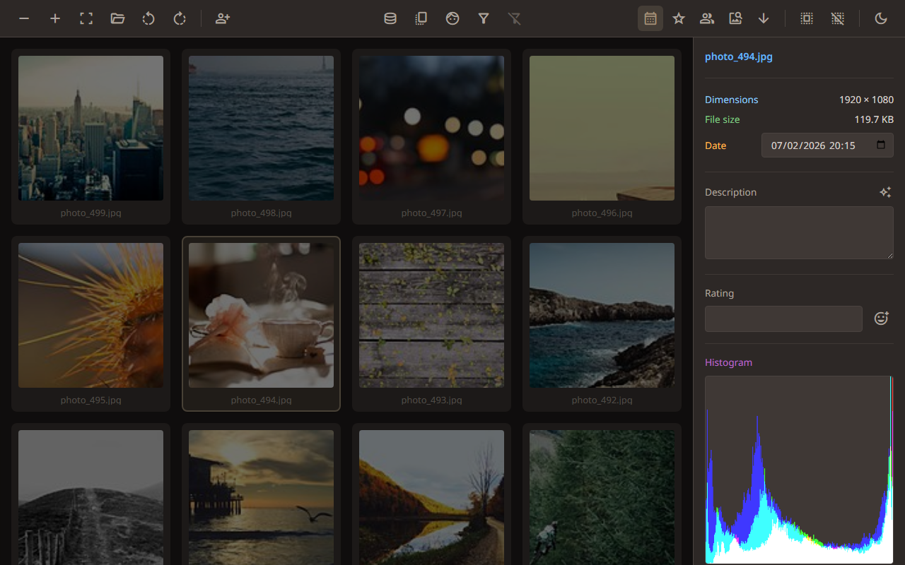
The info panel shows the filename, dimensions, date, and file size. You can also add a description and a rating to help you find this photo later.
1.5. Adding a description
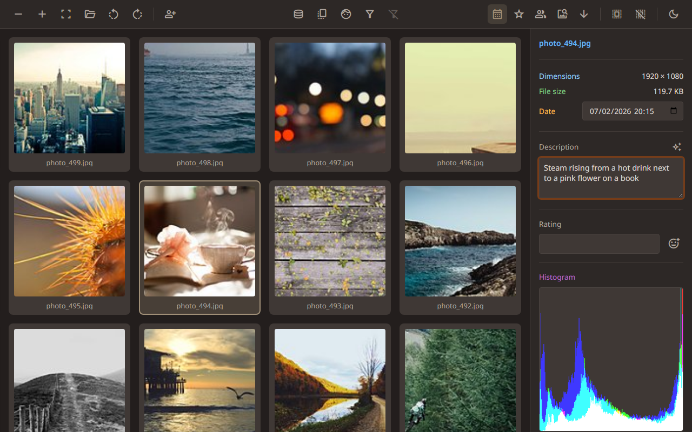
Type a description and press Enter to save it. Descriptions are searchable, so a few words now saves time later.
1.6. Auto-captioning
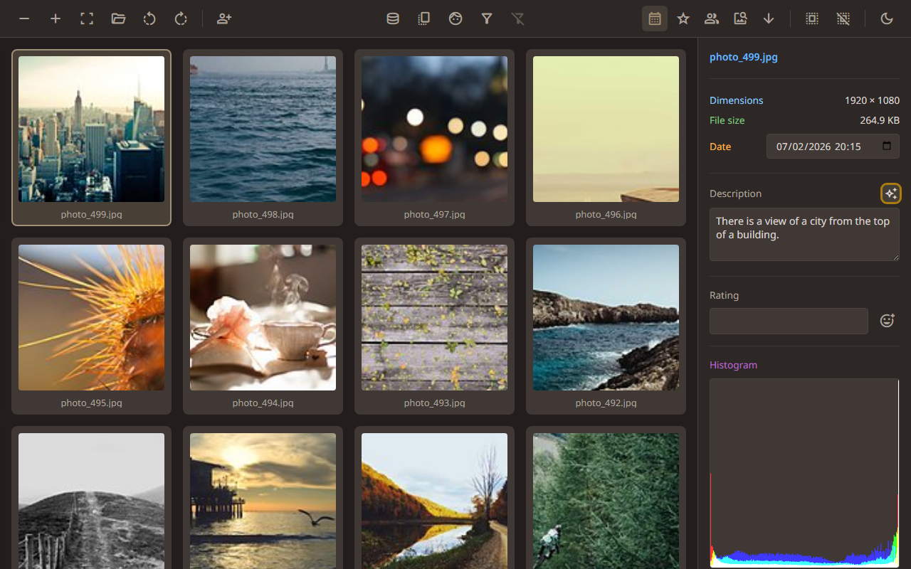
Don't feel like typing? Click the sparkle button to generate an automatic caption. You can edit it afterwards if you like.
1.7. The emoji picker
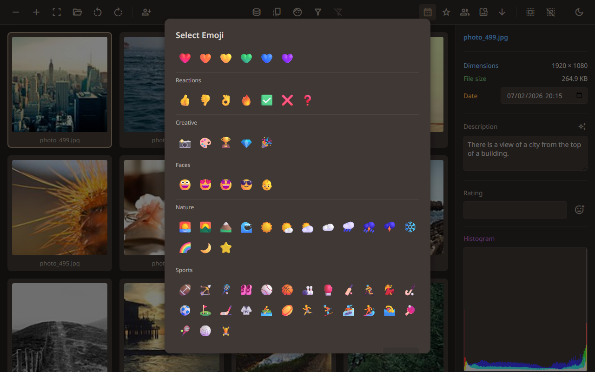
Click the emoji button next to the rating field to open the picker. Choose any emoji to rate your photo — stars, hearts, or anything you like.
1.8. Adding a rating
Ratings can be anything you like. Emoji work well — try stars for favourites or hearts for the ones you love.
1.9. Selecting multiple photos
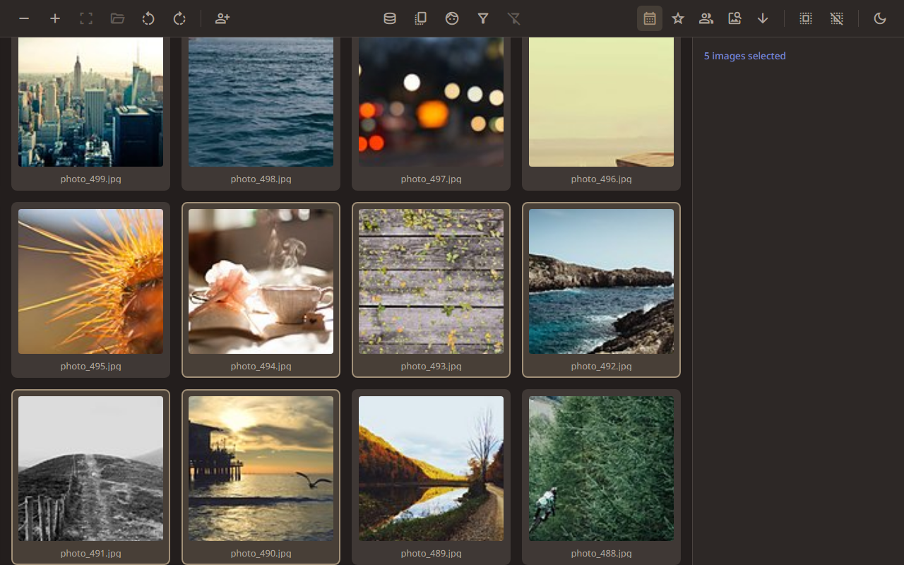
Hold Shift and click to select a range. You can also Ctrl+click to pick individual photos, or drag a box around a group.
1.10. Sort direction (newest first)
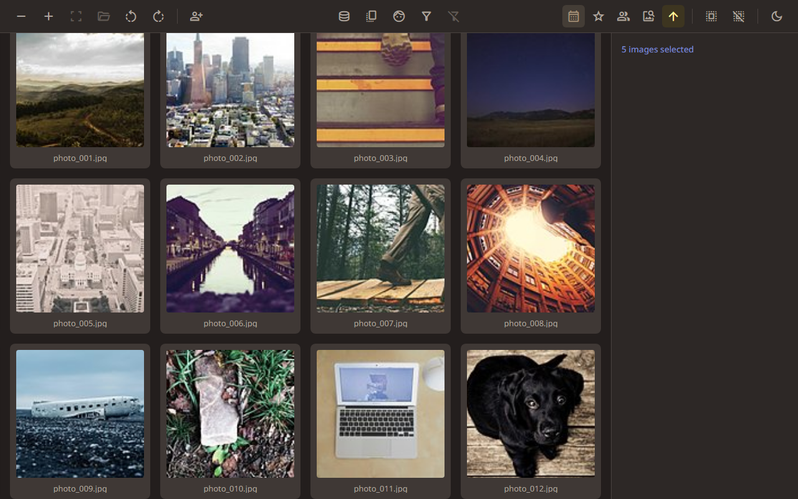
Photos are sorted by date. Click the arrow button to flip the order — here, newest photos appear first.
1.11. Sort direction (oldest first)
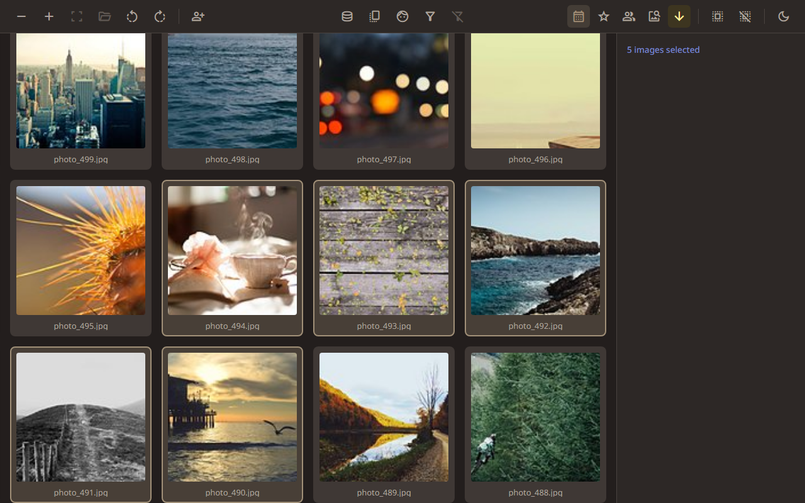
Click again to reverse. Now the oldest photos are at the top. Use whichever direction suits what you’re looking for.
1.12. Choosing a photo for similarity
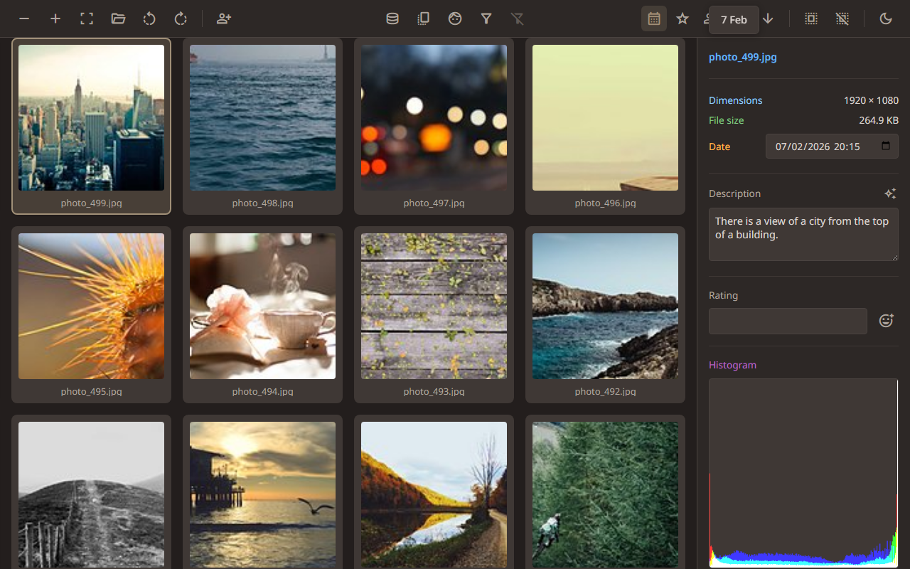
Select a photo to use as the basis for similarity sorting. The grid will be rearranged so photos that look like this one appear first.
1.13. Sorting by content similarity
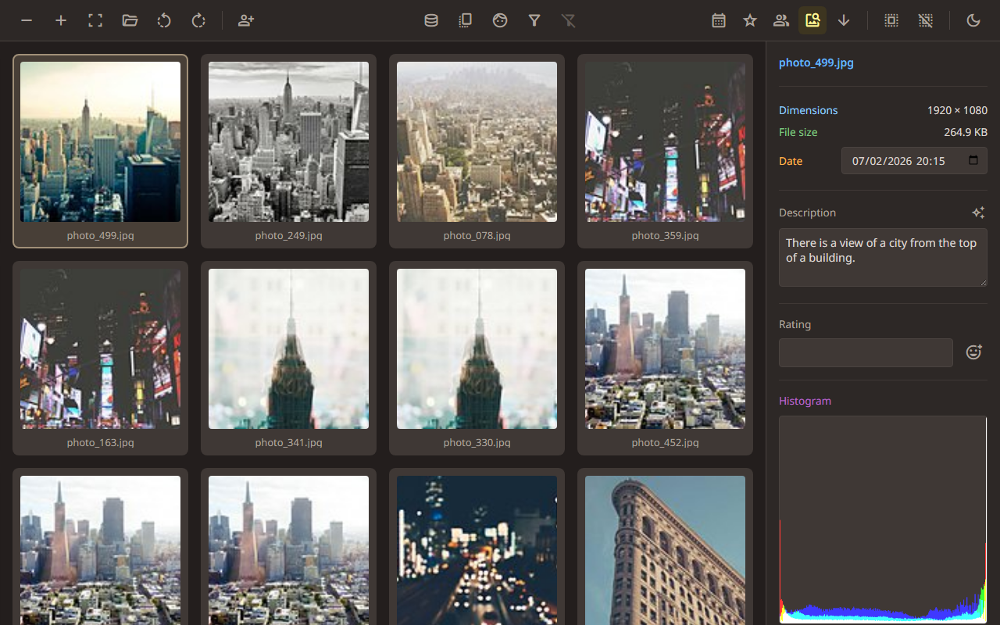
“Sort by content” rearranges the grid so photos that look similar to your selection appear nearby. Handy for finding related shots.